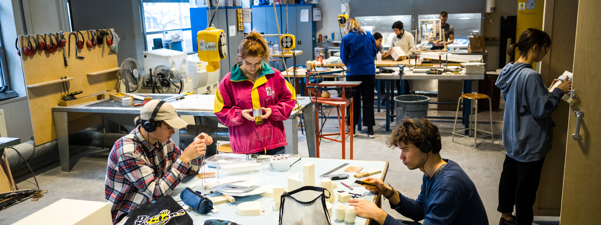

Biblioteca
La biblioteca de la Design Academy Eindhoven es un recurso integral, con una colección rica y continuamente actualizada de libros, revistas, periódicos y más.
Horario: Lunes a Viernes de 9:00 a 18:00
Recursos: Más de 20,000 volúmenes especializados en diseño

Taller de plásticos
El Taller de Plásticos es el lugar central dentro del edificio de la Academia para trabajar con todo tipo de plástico.
Equipamiento: Inyección, termoformado, vaciado, mecanizado
Materiales: ABS, policarbonato, acrílico, siliconas
Taller Textil
El Taller Textil es un espacio para estudiantes con interés en materiales suaves, colores y técnicas de construcción textil.
Técnicas: Tejido, bordado, estampado, confección
Equipos: Telares, máquinas de coser industriales, bastidores
Taller digital
El Taller Digital es el lugar central para la impresión, la fotografía, la grabación de sonido y el acceso a computadoras dentro de la Design Academy Eindhoven.
Equipos: Impresoras 3D, cortadoras láser, estudio fotográfico
Software: Suite Adobe, Rhino, AutoCAD, Blender
Taller de serigrafía
El Taller de Serigrafía ofrece a los estudiantes el espacio y el apoyo para experimentar con diversas técnicas de impresión en una amplia variedad de materiales.
Técnicas: Serigrafía manual, fotoserigrafía, impresión textil
Capacidad: Hasta 6 colores simultáneos
Taller de madera
El Taller de Madera es un centro para todos los procesos de fabricación relacionados con la madera dentro de la Academia, desde aserrar y lijar hasta doblar y pegar.
Maquinaria: Sierra de cinta, torno, fresadora, CNC
Materiales: Maderas nobles, contrachapados, MDF
Laboratorio 3D
El 3DLab es un entorno dedicado a la experimentación y aplicación de técnicas de diseño digital. Este taller ofrece apoyo a estudiantes de diseño interesadas en utilizar programas 3D, automatización y electrónica en sus proyectos.
Equipos: Impresoras 3D de resina y filamento, escáner 3D
Tecnologías: Realidad virtual, prototipado rápido
Taller de cerámica
El Taller de Cerámica utiliza alrededor de 1000 kg de yeso al mes para fabricar moldes de cerámica. Pero el espacio no se limita a fabricación de moldes. En este taller, los estudiantes pueden experimentar con la creación de formas con yeso en todas sus variantes, desde la barbotina líquida hasta la arcilla sólida.
Equipos: Hornos eléctricos, tornos, área de moldes
Técnicas: Modelado, vaciado, esmaltado